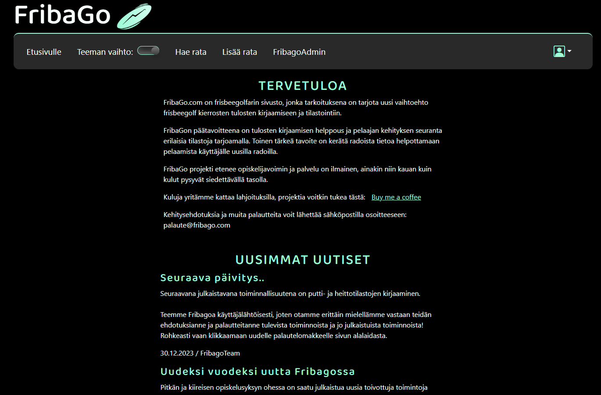

Radan lisäykseen tekemäni sivu. Tietoja ei pääse lähettämään ennenkuin vaaditut kentät on täytetty ilman virheitä. Korit voidaan valita valikosta, jossa on lueteltuna radoilla usein käytössä olevat korimallit.
FribaGo on sivusto frisbeegolfin pelaajille. Ajatus tuli lajia harrastavalta luokkakaverilta, jolla oli mututuntumaa siitä, että nykyisten frisbeegolf-sovellusten rinnalla olisi kysyntää jollekin uudelle ja hieman erilaiselle toteutukselle. Ja siitä se sitten lähti. Kehitys aloitettiin loppukeväästä 2023 ja loppukesästä päästiin ottamaan sisään testikäyttäjiä. Heidän palautteensa avulla kehitystyö jatkuu. FribaGo on selainpohjainen sivusto, joka on tehty skaalautumaan myös tableteille ja matkapuhelimille. Ohjelmaa kehitetään jatkuvasti opintojen ja töiden ohessa. Tämä on ollut meille tekijöille todellinen oppimatka. Meille on kullekin muodostunut jonkinlaiset pääroolit kehityksessä, mutta kaikki auttavat toisiaan siellä missä tarvitaan. Näin jokainen on päässyt kehittämään taitojaan monenlaisissa kehityksen tehtävissä. FribaGossa käyttäjät voivat lisätä ohjelmaan ratoja ja layouteja, joita kuka tahansa käyttäjä voi pelatessaan käyttää. Väyläkuvan voi lisätä peliradalta, mutta jos sitä ei ole saatavilla, on ohjelmaan tehty piirto-ohjelma, jolla väyläkuvan voi piirtää. Omat tulokset pelikierroksilta voi tallentaa, ja niistä näytetään myös tilastoja. Juuri julkaistu pari- ja joukkuepelimahdollisuus erilaisten sääntöjen kanssa on toivottu ominaisuus. Toivomusta tuli myös vaaleasta teemasta oletuksena olevan tumman teeman sijaan, ja sekin saatiin tuotua tarjolle viime päivityksessä. Tulevaisuudessa suunnitelmalistalle on kirjattu tilastointia, kommentointia, rekisteröitymättömän käyttäjän ottaminen mukaan joukkue-/paripeliin, mobiiliversio ja monta muuta sovellusta kehittävää tehtävää. Nämä kaikki ovat Jirassa, josta sitten yhdessä valikoidaan mitä seuraavaan päivitykseen tehdään. Kiitos ja kumarrus hyvästä yhteistyöstä kanssa-ahertajille: Anne Arhipoff, Antti Mutanen (idean isä) ja Mari Nieminen. Tätä on ollut ilo työstää kanssanne ja tästä on hyvä jatkaa!
Tietokanta on ollut minun pääroolini tässä projektissa. Vaikkakin tehtäviä on tullut tehtyä laidasta laitaan, niin tämä on se minun varsinainen "vastuualue". Tietokantatauluja on tähän mennessä tullut suunniteltua ja tehtyä reilu 20. Käyttäjät, radat, layoutit, kuvat, ystävät, asetukset, statistiikat, uutiset, palautteet.. Lista on pitkä ja lisää on tulossa. Olen tehnyt tietokantatauluihin PHP:llä insert-tiedostot ja update-tiedostot, joita sitten voi kutsua tarpeen mukaan. Tekemissäni tiedostoissa olen suorittanut myös sanitoinnit ja validoinnit tiedostoon tuleville tiedoille. Tietokantaa on kehityksen aikana muokattu tarpeen vaatiessa.
Radan lisäykseen tekemäni sivu. Tietoja ei pääse lähettämään ennenkuin vaaditut kentät on täytetty ilman virheitä. Korit voidaan valita valikosta, jossa on lueteltuna radoilla usein käytössä olevat korimallit.
Radan muokkaussivulle haetaan valmiiksi tietokannassa olevat tiedot, jotta niitä on helppo päivittää tarvittaessa.
Käyttäjän yksityisyys on myös otettu huomioon. Tein käyttäjälle monipuoliset asetusvalikot, joista osa näkyy kuvassa. Käyttäjällä on paljon mahdollisuuksia valita kenelle haluaa tulostensa tai omien profiilitietojensa näkyvän.
Olen myös tehnyt validointeja lomakkeille, jotta säästyttäisiin virheiltä tietokantaan tietoja syötettäessä. Tässä kuvassa esimerkkinä Layoutin lisäys, jossa varoitellaan tietokantaan sopimattomasta merkkimäärästä, pakollisten tietojen täyttämättä jättämisestä sekä tiedosta, joka ei ole ennalta määrättyjen rajojen sisällä. Tallennusnappi tulee käyttöön vasta kun kaikki virheet on korjattu.